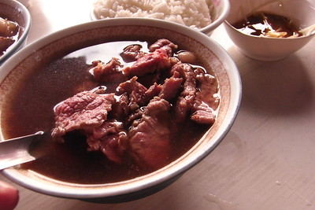
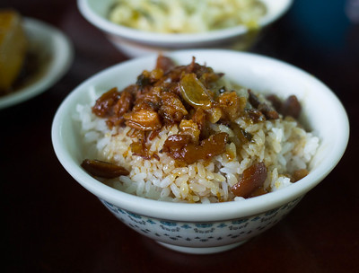
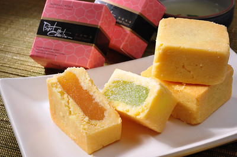
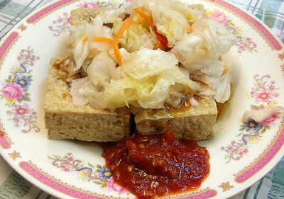

Beef Noodle Soup

Beef Noodle Soup is a traditional soup that can be seen everywhere in Taiwan. The ingredients that mostly make up this dish are noodles, broth, beef, vegetables, and a lot of spices. Each store has it's own way of making this dish. It's broth is made up of many beef parts and spices and is cooked several hours until it is finally served to you. The average price of this dish is around $3.5 in Taiwan. However, there is a place that sells this dish for nearly $334!
Beef Soup

This is another dish that is really popular in Taiwan. However, this dish is mostly in Tainan. The difference between this dish and beef noodle soup is that there are no noodles in this dish. In addition, the broth is more mild and it focuses more on the broth and the beef. The really famous stores that sell this dish usually open really early in the morning. The beef is really fresh and is sent to the stores as soon as the cow dies. The average price for this dish is around $3.5 in Taiwan.
Braised Pork on Rice

This is a common delicacy that is seen on the streets and lots of households. It's ingredients include marinated ground pork and rice. It is a dish that is easy to make. The hard part is marinating the ground pork. Each store has a different method of marinating the meat which results in different flavor. Ground pork can also be substituted with ground beef. In addition to it's flavor, it's also really cheap. The average price for this dish is around $1 in Taiwan.
Bubble Milk Tea

This is a drink that is famous worldwide. In fact, this drink was invented in Taiwan in the 1980's. It is consisted of milk, tea, sugar, and the toppings. The tea that this drink use was originally black tea or green tea. However, merchants have began innovating for different flavors and started using different teas. In addition, they also change the toppings to pudding, taro, herbal jelly and so on. This average price of this drink is around $1.7 in Taiwan.
Coffin Bread

This is a delicacy that is similar to the pie that you recognize. The bread is known as the "coffin" in this dish. They fry the bread so that it has a crispy texture. Inside of the "coffin", they put hot soup. What kinds of soup usually depends on the merchants. Usually, they add corn soup. In addition to the soup, the merchants usually add chicken, seafood, and mushrooms inside. You can find this delicacy in the night market. It costs around $2 in Taiwan.
Oyster Vermicelli

This is also a delicacy that can be seen on the streets in Taiwan. It is mainly made up of oysters, misua (a kind of noodle), and broth. While making the broth, they put starch to give the broth a thicker texture. Another thing that people add to this dish is large intestines which may sound disgusting, but they are accepted and like by a huge population of Taiwan. In addition to the ingredients above, we often add Black vinegar to give it a sour flavor. It costs around $1.7 per bowl.
Oyster Omelette

This is a delicacy that is really popular in night markets. It is mainly consisted of oysters. To make the omelette, starch is added into the egg batter. It also consists vegetables and seafood to the customer's liking. You can also change the oysters to shrimp or squid. Another thing that makes up this dish is the sauce. Usually merchants use a red sauce or spicy sauce on the omelette to increase it's flavor. This dish costs around $1.6 in Taiwan.
Pineapple Cake

This is often regarded as a treat instead of a delicacy. There are usually two layers of this cake. The crust and the fillings. The crust is made up of pineapple but the fillings inside sometimes changes. You can only find this treat in certain shops. This is also a thing that you might want to bring back to your country if you ever have the chance to visit Taiwan. You usually but them in a decorated bag with a price around $10.
Baobing

Baobing or shaved Ice is a traditional dessert in Taiwan. In the eastern part of the world you have ice cream. We have shaved ice. The main ingredient of this dish is ice and a wide variety of toppings to your choice. The toppings can be anything from sweets to fruits or even ice cream. The more traditional toppings that we have are different kinds of beans, pudding, pearls, and fruits. The traditional sauce that we put on the ice is black sugar syrup. The average cost is $1.6 in Taiwan.
Stinky Tofu

Last but not least is the stinky tofu. This has been a pain for people from other countries to try because of the smell. It is usually sold in night markets. Although it has a strong odor, it has a really good taste. It is also served with Taiwanese Kimchi. The color of the tofu can be black / yellow according to bean that they use. The tofu can be steamed with a delicious broth or fried but is usually fried and served with a sweet sauce. You can add chili sauce or garlic sauce for an extra flavor. The cost of this dish is around $1.6.